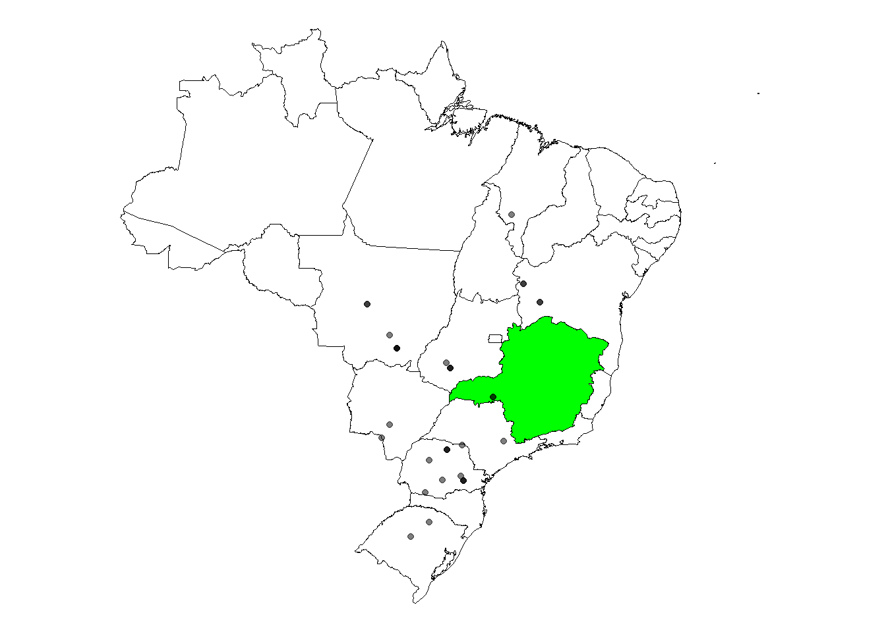

library(tidyverse)library(r4pde)sbr <- RustSoybeanlibrary(rnaturalearth)library(rnaturalearthhires)remotes::install_github("ropensci/rnaturalearthhires")BRA <-ne_states(country ="Brazil", returnclass ="sf")MG <- BRA |>filter(name_en =="Minas Gerais")ggplot(BRA) +geom_sf(color ="black", fill="white")+geom_sf(data = MG, fill ="green", color ="black")+geom_point(data = sbr, aes(longitude, latitude), alpha =0.5)+#o alpha é pra sobreposição de pontos por cortheme_void()

sbr2 <- sbr |>separate(planting, into =c("year", "month", "day"), sep ="-", remove =FALSE)BRA <-ne_states(country ="Brazil", returnclass ="sf")MG <- BRA |>filter(name_en =="Minas Gerais")library(ggsn)library(ggspatial)ggplot(BRA) +annotation_scale(location="br")+annotation_north_arrow(location ="bl")+geom_sf(color ="black", fill="white")+# geom_sf(data = MG, fill ="green", color = "black")+geom_point(data = sbr2, aes(longitude, latitude, color = year, size = severity), alpha =0.5)+#o alpha é pra sobreposição de pontos por cortheme_void()+#facet_wrap(~year)+#pra separar um gráfico por ano, ou se tirar fica só as cores diferentes pra cada ano no mesmo mapageom_hline(yintercept =-23)+labs(color ="Plating Year")+theme(legend.position ="right")